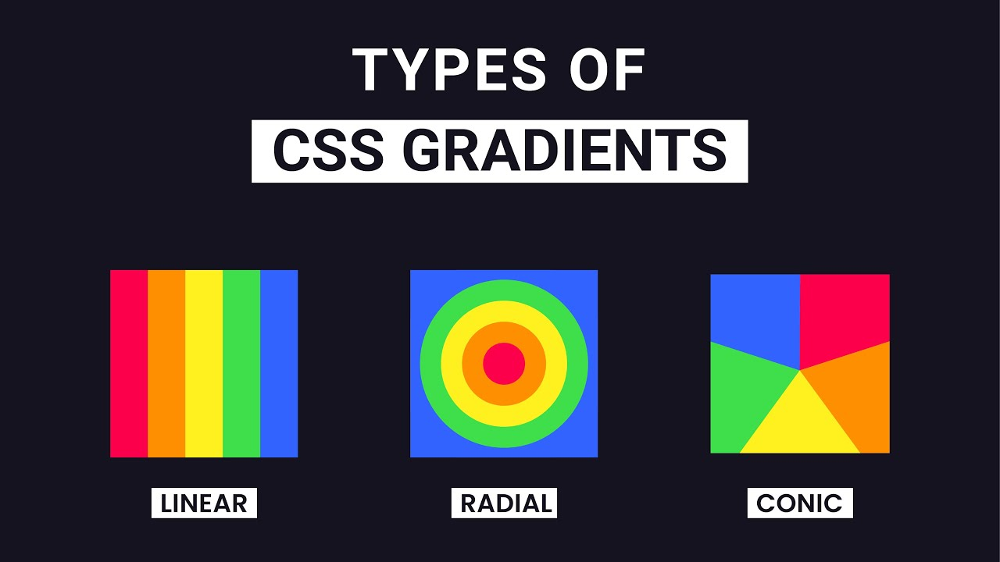

เป็นโค้ดที่เอาไว้เป็นแบ็คกราว header และไล่สี ต้องมีสองสีเป็นอย่างต่ำมีอยู่สามแบบ
Syntax: background-image: linear-gradient(direction, color-stop1, color-stop2, ...);
Syntax: background-image: radial-gradient(shape, color-stop1, color-stop2, ...);
Syntax:
background-image: conic-gradient([from angle] [at position,] color [degree], color [degree], ...);
เป็นโค้ดที่เอาไว้ทำเงาตรงกล่องไดอารี่ที่ทำ
Syntax: box-shadow: none|h-offset v-offset blur spread color |inset|initial|inherit;